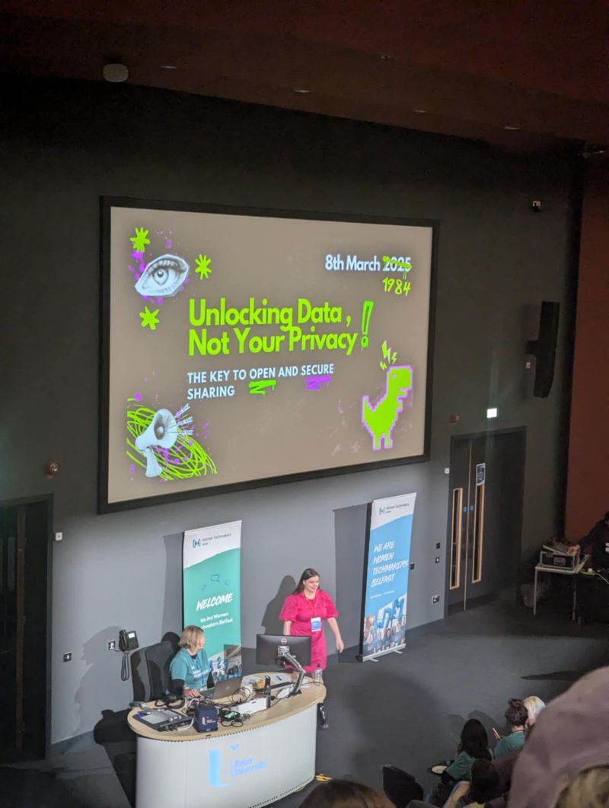
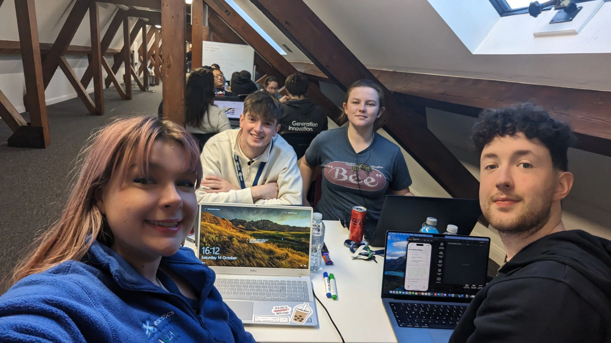
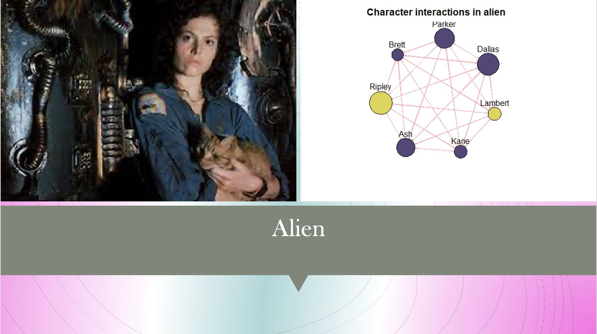
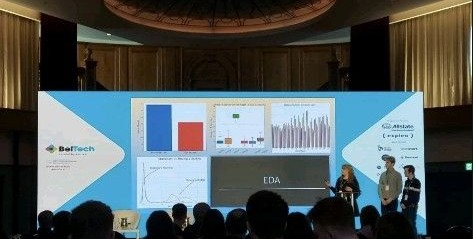
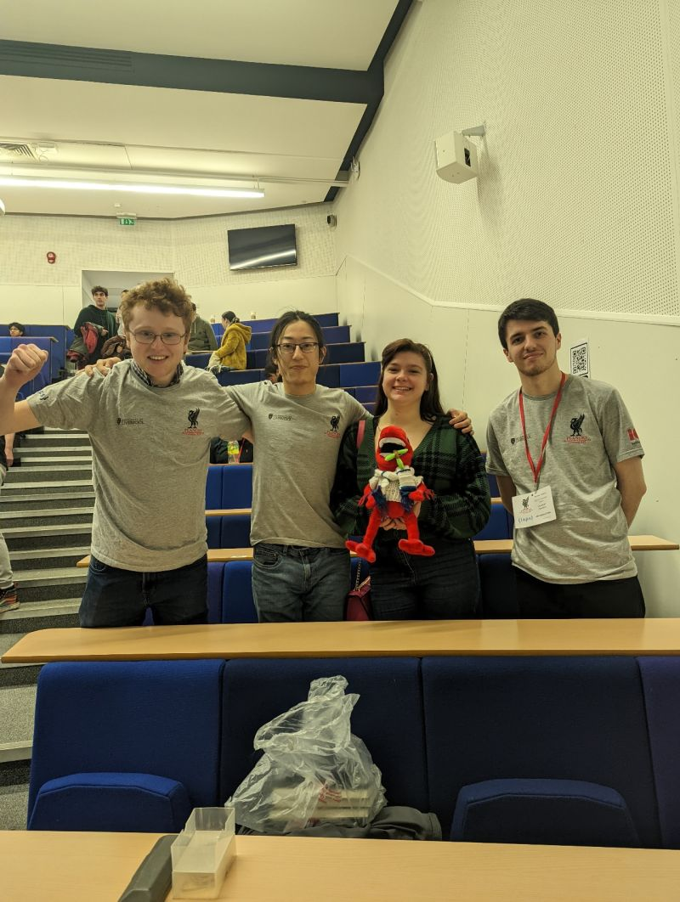
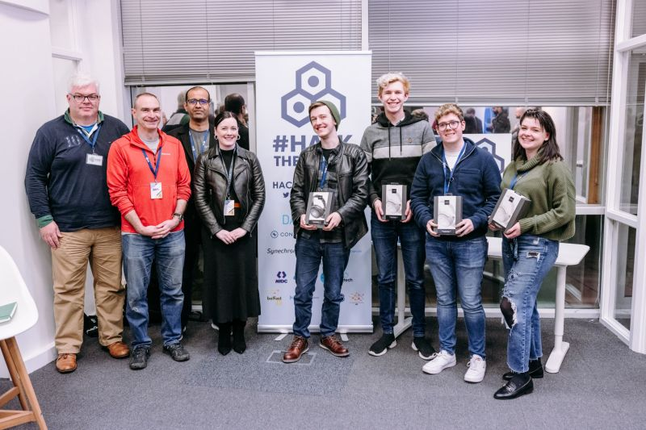
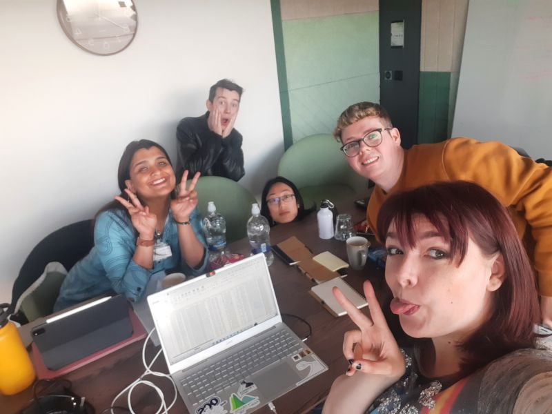
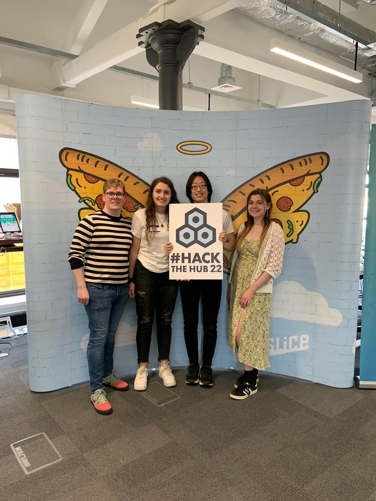
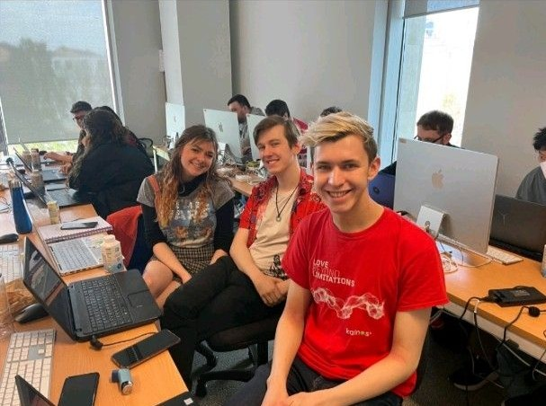
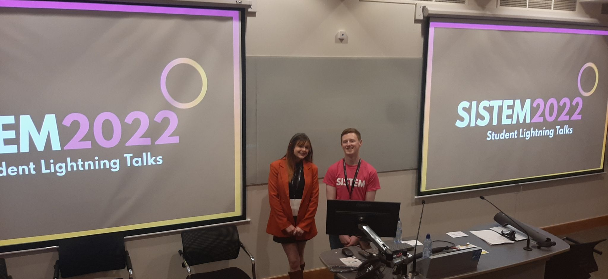

Talks and Hackathons
Any Talks or Hackathon's I've done
Elevate : Big Brother, Bigger Surveillance
March, 2025
Conference
Data and AI
I had the opportunity to talk in Mandela hall with my friend Saffron Baker (LLM in Law and Criminology) at ElevateNI Student Conference, with our talk "Beyond Big Brother: The Corporate Takeover".
While I focused on surveillance, Saffron focused on private policing, and together we examined it's rise and integration into society.
Here is a short summary of what was covered:
🔒An intro to Big Brother, a synopsis of 1984 and it's relevance today.
🔒Policing - what it really means, and different types and their jurisdictions.
🔒A policy overview of surveillance, from different laws to CCTV opinions and attitudes.
🔒Surveillance-based scandals from Watergate, Matrix, Snowden, Cambridge Analytica and News of the World.
🔒The pipeline from "Community policing" to "Community being policed", the introduction of ring doorbells to society and it's direct consequences of Amazon giving user data without consent to the police.
🔒Who carries out surveillance and the different types of surveillance, from work, to public, to mass surveillance.
🔒The corporate lies used to embed surveillance into society, selling tools of safety that can be easily abused, particularly apple airtags which are small and discrete enough that they can be placed on someone's person for only £26.
🔒We finished with common myths around safely, explaining the paradoxes of the phrase "If you've got nothing to hide you have nothing to fear" and discussed it in the context of accessing safe healthcare for women in America where data is being used to target and control.
Women Techmakers: Unlock your Data , not your privacy
March, 2025
Conference
Data and AI
Yesterday I presented "Unlock your Data, not your Privacy- The Key to Open and Secure Sharing"at Women Techmakers Belfast.
My main focus was Data Privacy and anonymisation, I discussed data collection and how swiftly you can link seemingly anonymous data back to the source.
I wanted to showcase the concerns around safety and data reidentification and talk about the risks associated with this.
Some protective measures I outlined for Data Privacy where :
🔒Add your own noise, disrupt algorithms by interserting random things into your search engine or social media algorithms. I suggested to the conference that they do the toothbrush test, search for toothbrush and time on your phone how quickly it takes an ad to appear in your social media or online websites. This shows how swiftly your data is harvested from search to influencing how you are targeted by retaillers.
🔒Protect the Privacy of others as well as yourself , Go into your parents and children's phones' app list and check permissions especially location, media or contacts irrelevant to the function of the app.
🔒Use Fake data for unimportant online things, Tesco clubcard or free wifi sign in give them a random combination of information - It will protect in a breach
🔒give up Cookies not just for Lent ... say no to cookies you'll get the same resource - without the surveillance.
Thanks to Everyone who came to my talk and chatted to me yesterday, I met so many fantastic people and I hope I raised awareness about Data Privacy.

Queen's Univeristy Datathon
Hackathon
Data and AI
I had the privilege of being part of the winning team at a datathon hosted by Queen's Business School and Queen's University Belfast | School of Electronics, Electrical Engineering & Computer Science EEECS.
The event was held in part by Queen's University Belfast's Global Innovation Summit , with sustainability as the central theme. Our team's investigation focused on how data can be leveraged to address the high number of preventable deaths in Northern Ireland.
My team consisted of Tim Chan, Amy Hannon,Eoin Summerville and Thomas News , a mix of friends and new people who first met on Tuesday to dive into the day.
With fantastic help from our mentor Greeshma V M and a brilliant session on how to pitch from Hannah Cummings, PhD we began to work on the data.
We worked with a range of datasets, including NISRA's deprivation index dataset and the 2021 Census , which highlighted key challenges faced by communities.
The datathon was sponsored by Kainos and Alteryx, a company specialising in geo and spatial data visualisations.
Deprivation in Northern Ireland is a complex, multi-layered issue with numerous factors influencing outcomes for residents. Our team chose to focus on healthcare accessibility and service provision.
A stark statistic guided our solution: 1 in 4 deaths in Northern Ireland in 2023 were preventable. (The various causes of death and associated age bands considered to be preventable by broad public health interventions are defined by the Office for National Statistics (ONS) NIMDM 2017 Indicators)
We developed Health Drive, an initiative building on the successful deployment of mobile units during the COVID-19 pandemic. The aim was to create tailored solutions for areas with limited healthcare access, delivering services directly to communities and addressing their most pressing needs.
We also identified potential risks and mitigations, such as staffing challenges, optimal service locations, and the integration of centralised patient care. For each identified risk, we outlined practical mitigation strategies to enhance the feasibility and value of the solution.
The initial stage of the competition took place on Tuesday, 12th November, with 25 teams of 4-6 members working intensively with the datasets and presenting their solutions. After a rigorous selection process, we were shortlisted to the final 3 teams. The following day, we presented on the Global Innovation Summit stage in a packed Whitla Hall.
For those interested, you can watch Tim Chan and I pitch at the summit - (https://lnkd.in/eNHmCYRv )(timestamp: 1:01 - 1:08).
Hack The Hub
Hackathon
Data and AI
Yesterday Una D'Arcy, Lucy Bell, Roksana Krogulec and I competed in our first "Ethical and Responsible AI" hackathon at PwC UK offices, hosted by HackTheHub®.
We built on the 5 pillars of the ethical and responsible AI framework,
and created our idea, F*AIry.
A tale as old as time, people knew not to give the fairies their real name as their names were powerful seals and the Fairies were often bold with the data. (https://lnkd.in/exqmjdg8)
So now days, why are we giving our name and other personal details away so easily?
Big corporations are using our data to create biased, untested and non-transparent AI models to make important decisions.
As with GDPR and the Digital Privacy Act, corporations who break these rules simply pay fines and do not alter or strive to better their behavior, as seen here with the same offender (Meta) (https://lnkd.in/eaWr--Rg)
Now comes our solution; poison the data well! We created a browser extension that autofills data fields with generic random data to skew the models. The user has the opportunity to keep the fields they want to disclose and use the F*AIry extension to protect their privacy for everything else.
Under ethical and responsible AI, we explored the privilege that is privacy, and the paradox privacy is for the rich only, even though defined as an inherent right. (https://lnkd.in/eRdsPtEQ)
By forcing companies to source our data from trusted sources we can create and force ethical consumption and retrieval of fair and balanced data.
We are planning to make this idea as a chrome extension very soon
Thanks to Conor Graham and the team for an amazing hackathon with amazing ideas presented during the pitches.
Hack The Hub
March, 2024
Hackathon
Data and AI
Excited to share that my team and I won the HackTheHub® autumn hackathon this past weekend!
Our idea - inSURE genAI chatbot and analyzer for natural disasters focused on streamlining the claim processs during a natural disaster, guiding users through the process while also highlighting what was and wasn't covered in their policy. We also implemented safety features for natural disasters and created a live reporting system with real-time updates. It was a great experience working on this project!
with my teammates Lucy Bell Jack O'Shea and Patrick D'Arcy

Beltech : The Bechdel Test: Neural Networks
March, 2023
Meetup
Data and AI
This year on International Women's Day I presented at the Everything Data Meetup hosted by Kathy Ayers at Allstate Northern Ireland.
I presented on using graph neural networks to explain the Bechdel test.
It was a great event and glad to have a great turn out.
If anyone would like to see the presentation feel free to link me but here's a preview below

Beltech : GaitKeeper
March, 2023
Conference
Data and AI
Happy to have presented at this years BelTech at the Titanic centre.Evan Russell, James Matchett and I presented our recent hackathon AI work form HackTheHub®.
It was a great opportunity to be able to showcase our idea Gait Keeper.
Where we investigated accelerometer and gyrometer data and used it to create a security authentication.

PLANKS
Feb, 2023
Maths
competition
Had a Brilliant time at the Plancks competition for Theoretical Physics at the University of Liverpool where my team(Patrick Dalton , Tim Chan and Tiarnan Smyth) competed against teams across the UK and Ireland over a challenging exam testing our ability in theoretical physics.
Special thanks to the International Association of Physics Students and Institute of Physics for organising the event, and to Queen's University Belfast for supporting our team.
Loved meeting people across all disciplines with a core love of physics.

Hack The Hub
Sept, 2023
Data and AI
Hackathon
I won my first Hackathon at the weekend with HackTheHub®.
I had a fantastic team with Evan Russell on data Science alongside me, James Matchett on api's and backend and Paul Larkin on frontend and android.
We looked at the problem statement how can we create an innovative solution in the finance sector for clients and customers.
The recent case of the phone being stolen from the gym is where we based our solution on.
We created 3FA: Gaitkeeper!
Using accelerometer and gyro data to create a digital profile on the user.
This acts as a unique identifier.
With almost 30 separate columns and data been received at 10 rows a second.
We can use machine learning, in our case random forest worked the best to predict if it is the user using the phone to prevent the bypass of 2fa and the breach of further Information.

Hkd: HacKeD
May, 2022
Data and AI
Hackathon
I was with Tim Chan, Evan Russell, Paul Larkin, Huda AlBaqali, and James Hanna at HKD (HacKeD)'s hackathon.
We looked at records and decided to find a way to detect Fraud.
Our team learned PowerBi to achieve this with James Hanna and Tim Chan making an interactive dashboard to help analyse fraud on features location, amount, gender and used map analytics to display this.
Along with Evan Russell, I developed a working model to 74% accuracy using random forests, we also ran glms to decided the features we would use.
Huda AlBaqali and Paul Larkin who worked on our presentation background info and graphics for the our work.
We all enjoyed the day PwC UK offices and heard great presentations on the day.
Thanks to all involved DailyPay , Analytics Engines and PwC UK

Hack the Hub
September, 2022
Data and AI
Hackathon
The hackathon focused on a Data and Ai challenge.We brainstormed and focused in on the idea of Trigger Warning.
This focused on the problem that film classifications are not in depth enough and can cause viewers with specific triggers emotional distress.We gathered all of our research data to back up and show the market for it.
The next thing to the look was for a suitable api, we used multiple api's to gather all our information.

IBM and UU Cyber Hackathon
August 30, 2025
Cyber
Hackathon
My team mates James Matchett and Evan Russell worked with me together on Tortoise which was an Ip lookup Web app to decide if an Ip was safe.
I focused on the front end and Web development using visual studio and react native.

Sistem - Climate Change and Technology
May 2022
Green Tech
Lighting Talk
Lighting Talk about Climate Change and Tech, focused on ways people can creater cleaner more efficient code and the impact of clearing and deleting emails can have, along with other steps we can take.
